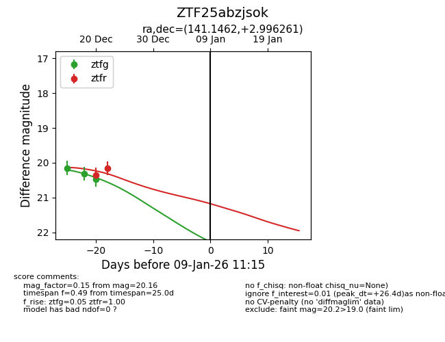
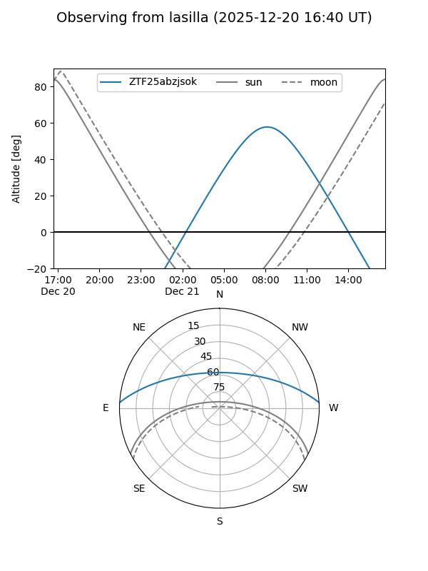
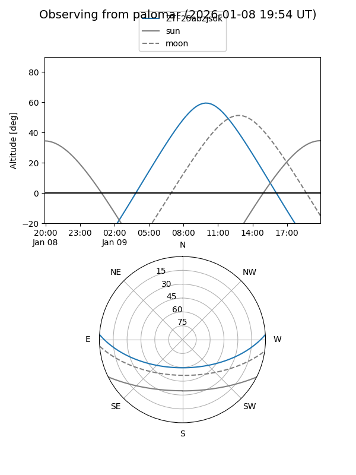

ZTF25abzjsok
Target ZTF25abzjsok at 2025-12-18 11:18
Aliases and brokers:
FINK: fink-portal.org/ZTF25abzjsok
Lasair: lasair-ztf.lsst.ac.uk/objects/ZTF25abzjsok
ALeRCE: alerce.online/object/ZTF25abzjsok
alt names
ZTF25abzjsok (ztf,fink_ztf)
Coordinates:
equatorial (ra, dec) = 141.1462,+2.99626
equatorial (HMS+DMS) = 09:24:35.08,+02:59:46.54
galactic (l, b) = (229.6624,+35.06565)
Photometry
last ztfg=20.15
1 ztfg detections
Lightcurve

Visibility


Additional plots